Introduction to Reinforcement Learning¶
In this chapter, we will provide an introduction to the reinforcement learning algorithms covered in the Deep Reinforcement Learning section. What we know as supervised learning is learning on known training data with labels, obtaining a mapping (predictive model) from data features to labels, which in turn predict the labels that new data instances will have. For reinforcement learning, we have two new concepts: “agent” and “environment”. Agents learn strategies by interacting with the environment to maximize the rewards it receives from the environment. For example, in the process of playing chess, you (the intelligent body) can maximize the rewards (number of wins) you receive in the process of playing chess by interacting with the board and your opponent (the environment) to learn the strategy of playing chess.
If supervised learning is concerned with “prediction”, the type of learning that is closely related to statistical theory, reinforcement learning is concerned with “decision making”, which is deeply related to computer algorithms (especially dynamic programming and search). The author believes that the introduction to the principles of reinforcement learning has a higher threshold than supervised learning, especially for programmers accustomed to deterministic algorithms to suddenly present a bunch of abstract concepts of numerical iterative relationships, most of the time can only gulp. Therefore, the author hopes to illustrate the basic idea of reinforcement learning for readers with a certain algorithmic basis through some more specific examples, in order to express as plainly as possible.
Let’s start with dynamic programming¶
If you have participated in algorithmic competitions such as NOIP or ACM, or prepared for machine exams for Internet companies (such as LeetCode), you will not be too familiar with Dynamic Programming (DP). The basic idea of dynamic programming is to decompose the problem to be solved into several subproblems of the same structure, and to save the answers to the solved subproblems, using 1 directly when needed. Problems solved using dynamic programming need to satisfy two properties.
Optimal sub-structure: a sub-structure of an optimal strategy is also optimal.
Non-sequitur: past steps can only influence future developments through the current state, which is a summary of history.
We recall the classic introductory title of dynamic programming, “The number triangle”.
the number triangle problem
Given a shape as follows 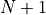 layer of numbers triangle and the number 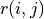 at each coordinate of the triangle, the intelligent body at the top of the triangle can choose to go down ( 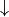) or right ( 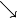) each time to reach the next layer of the triangle, please output a sequence of actions so that the sum of the numbers on the path the intelligent body passes is the largest.

Example of a digital triangle. The optimal sequence of actions in this example is “right-down”, the optimal path is “(0, 0) - (1, 1) - (2, 1)”, and the maximum sum is 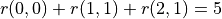.¶
Instead of considering how to find the optimal sequence of actions, and assuming that we know the actions that the intelligent body chooses at each coordinate (i, j) 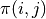 (e.g.  represents the actions that the intelligent body chooses to the right at (0, 0)), we simply calculate the sum of the numbers of paths that the intelligent body takes. Let us consider the problem from the bottom up, and suppose that 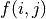 is the “sum of the numbers now and to be obtained in the future” at the coordinates (i, j) of the intelligent body, then the following equation can be written recursively.
represents the actions that the intelligent body chooses to the right at (0, 0)), we simply calculate the sum of the numbers of paths that the intelligent body takes. Let us consider the problem from the bottom up, and suppose that 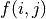 is the “sum of the numbers now and to be obtained in the future” at the coordinates (i, j) of the intelligent body, then the following equation can be written recursively.
(1)¶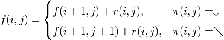
Another equivalent of the above formula is written as follows.
(2)¶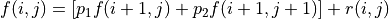
among them
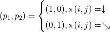
With the above pavement, the problem to be solved becomes: make 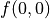 the largest value by adjusting the combination of the actions that the intelligent body will choose at each coordinate (i, j). In order to solve this problem, the most brutal method is to iterate through all of the combination, for example, in the example graph, we need to decide 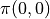, 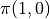, 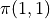 of the value, a total of 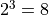 kinds of combinations, we just need to take 8 kinds of combinations one by one and calculate , the output maximum and its corresponding combination.
However, it’s clearly too inefficient. Then we consider the direct calculation of the (2) formula for the maximum value of the combination of all actions 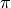 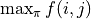. In the (2) formula, is independent of any action , so we need only consider the maximum value of the expression 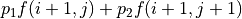. We then calculate the maximum value of the expression for any action 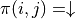 and 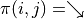, respectively, and take the greater of the two maximum values, as follows.
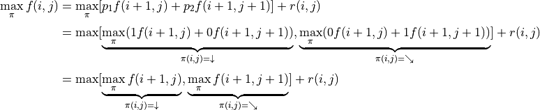
Make 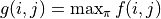 and the upper equation can be written as 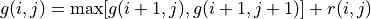, which is a common “state transfer equation” in dynamic programming. Using the state transfer equation and the boundary value 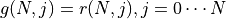, we can iterate efficiently from the bottom up to 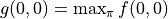.

The value of 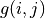 is calculated by three iterations of 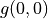 . In each iteration, for coordinates (i, j), take the “maximum of the sum of the numbers to be obtained in the future” when and , respectively (i.e. 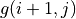 and 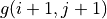), take the greater of the two, and add the number for the current coordinates.¶
Incorporating dynamic programming for randomness and probability¶
In real life, the decisions we make often do not point to a certain outcome with complete certainty, but are simultaneously influenced by environmental factors. Choosing to hone one’s game, for example, while making one’s odds of winning higher, does not mean winning every battle. As the saying goes, “it is both a personal struggle and a historical journey that must be taken into account”. Corresponding to the number triangle problem we discussed in the previous section, we consider the following variants.
the number triangle problem (variant 1)
The smart body starts at the top of the triangle and can choose to move down ( :math:downarrow’) or right ( :math:searrow’) at a time. However, the environment can “interfere” with the actions of intelligent bodies at arbitrary coordinates (i, j), resulting in the following.
If downward ( ) is chosen, the probability that the intelligence will eventually reach the lower right coordinate (i+1, j) is 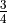 and the probability that it will reach the lower right coordinate (i+1, j+1) is 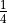.
If the choice is to the right ( ), the probability that the intelligent body will eventually reach the lower right coordinate (i+1, j) is :math:frac{1}{4}` and the probability that it will reach the lower right coordinate (i+1, j+1) is :math:frac{3}{4}`.
Give the action that the intelligent body should choose at each coordinate so that the expectation (Expectation) 2 of the sum of the numbers on the path that the intelligent body passes is maximum.
At this point, if you want to write the state transfer equation of the problem directly, I’m afraid it won’t be so easy (action selection and transfer results don’t correspond one to the other! . But if we analogize the framework of the problem described in the previous section EQ2 style, we will find the problem easier. In this problem, we follow the symbol to represent the “expectation of the sum of the present and future numbers to be obtained by the intelligent body at the coordinates (i, j)”, and then there is the “expectation of the present (i, j) coordinates = the expectation of the sum of the numbers to be obtained after the ‘selection action + the numbers at the present coordinates”, as follows
(3)¶
among them
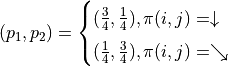
The derivation process of the previous section of the analogy, such that , we get
(4)¶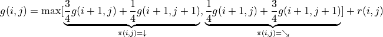
We can then use this recursive formula to calculate from bottom to top .

The value of is calculated by three iterations of . In each iteration, for coordinates (i, j), calculate the “expected maximum value of the sum of the numbers to be obtained in the future” when and (i.e., 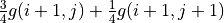 and 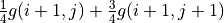), taking the greater of the two, and adding the number for the current coordinates.¶
We can also observe the (4) pattern from the actions made by the intelligent body at each coordinate (i, j) departure. In each iteration, the future benefit expectation (strategy evaluation) from the two actions is first calculated separately, then the action with the larger benefit is taken as the take of (strategy improvement), and finally is updated based on the action.
{kind=link}
Strategy Assessment - Strategy Improvement Framework: calculate by iterating the value of . In each iteration, for coordinates (i, j), the “expectation of the sum of the numbers to be obtained in the future” (strategy evaluation) is calculated when and , respectively, taking the action corresponding to the larger one as the value of (strategy improvement). Then update based on the value of determined in this iteration.¶
We can summarize the algorithm flow as follows.
initialization environment
for i = N-1 downto 0 do
(Strategy assessment) Calculate future expectations for each coordinate (i, j) choice in layer i and . 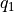 and 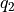
(strategy improvement) For each coordinate (i, j) in layer i, take the expected future action as the value of
(Value update) Value update of determined from this iteration 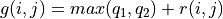
Cases where environmental information is not directly available
Let’s be more realistic: in many real-life situations, we don’t even know the specific probability values involved in environmental impacts, but have to explore summaries by constantly experimenting in the environment. For example, when learning a new Go move, there is no direct way to get the probability of a win rate increase, and the only way to know if the move is good or bad is to play multiple games with your opponent using the new move. Corresponding to the number triangle problem, we consider the following variant.
the number triangle problem (variant 2)
The smart body starts at the top of the triangle and can choose to move down ( ) or right ( ) at a time. The environment “interferes” with the actions of intelligent bodies at arbitrary coordinates (i, j), and the specific probability of this interference (i.e., 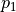 and 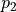 in the previous section) is unknown. However, multiple trials are allowed in a numbered triangle environment. When the intelligent body is at the coordinates (i, j), the action command or can be sent to the numeric triangle environment, which will return the coordinates (directly below (i+1, j) or right below (i+1, j+1)) where the intelligent body will end up. Please design experimental schemes and processes to determine the action that the intelligent body should select at each coordinate so that the expectation of the sum of the numbers on the path that the intelligent body travels is maximum.
We can estimate the values of probability and when the action is or by a large number of experiments, although this is difficult in many real-world problems. In fact, we have another set of methods that allows us to get the optimal action strategy without explicitly estimating the probabilistic parameters of the environment.
Returning to the “Strategy Assessment - Strategy Improvement” framework in the previous section, the greatest difficulty we now encounter is the inability to directly calculate the future expectations for each action in the “Strategy Assessment” with the previous stages of , and the probability parameters , (because the probability parameters are unknown). The beauty of expectations, however, is that even if we can’t calculate them directly, we can still estimate them through a large number of experiments. If we denote the future expectation 3 of the intelligent body when it chooses action a at coordinates (i, j) by 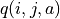, then we can observe the results of K trials after the intelligent body chooses action a at (i, j) and take the average of these K trials as an estimate. For example, when the intelligent body is at the coordinates (0, 1) and chooses the action , we perform 20 trials and find that 15 results are 1 and 5 results are 2, then we can estimate that  .
.
Thus, we can simply replace the calculation of future expectations in the previous section, “Strategy assessment”, with the future expectations of using the experimental estimates  and 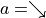 and proceed to the “Strategy assessment” step with the environmental probability parameters unknown. It is worth noting that since we do not need to explicitly compute the expectation 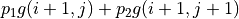, we do not need to care about the value of , and the step of updating the previous section’s value is omitted (in fact, here has taken the place of the previous section ).
and 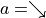 and proceed to the “Strategy assessment” step with the environmental probability parameters unknown. It is worth noting that since we do not need to explicitly compute the expectation 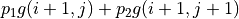, we do not need to care about the value of , and the step of updating the previous section’s value is omitted (in fact, here has taken the place of the previous section ).
It is also worth noting that since the experiment is a top-down step that requires an algorithm to provide action for the entire path, what should be good for those who have not yet determined the coordinates of the action ? We can use “random action” for these coordinates, i.e. 50% probability of selecting and 50% probability of selecting in order to fully “explore” both actions during the experiment.
{kind=link}
Replace the calculation of future expectations in the previous section, “Strategy assessment”, with future expectations using experimental estimates of and .¶
We can summarize the algorithm flow as follows.
Initialize q-value
for i = N-1 downto 0 do
(Strategy assessment) Experiment estimates future expectations for each coordinate (i, j) choice
and in layer i 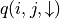 and 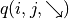(strategy improvement) For each coordinate (i, j) in layer i, take the expected future action as the value of
From direct to iterative algorithms¶
So far, we have followed very closely the idea of the “division of stages” in dynamic programming, i.e., dividing the problem into stages according to its temporal characteristics and solving it sequentially. Corresponding to the number triangle problem, i.e., calculate and update future expectations (or q-values) layer by layer from bottom to top, updating future expectations (or q-values) for this layer in each iteration. During this process, we are pretty sure that after N strategy evaluations and strategy refinements, the algorithm will stop and we can get accurate maximum numbers and optimal actions. We call this type of algorithm a “direct algorithm”, which is also a common type of algorithm we use in various algorithmic competitions.
However, in real scenarios, the computation time of the algorithm is often limited, so we may need the algorithm to have good “asymptotic properties”, i.e., it is not required to output an exact theoretical optimal solution, but only to be able to output an approximate better solution, and the quality of the solution increases with the number of iterations. We tend to call such algorithms “iterative algorithms”. For the number triangle problem, we consider the following variant.
the number triangle problem (variation 3)
The smart body starts at the top of the triangle and can choose to move down ( ) or right ( ) at a time. The environment “interferes” with the actions of intelligent bodies at arbitrary coordinates (i, j), and the exact probability of this interference is unknown. K trials are allowed in a number triangle environment (K may be small or large). Please design experimental schemes and processes to determine the action that the intelligent body should select at each coordinate so that the expectation of the sum of the numbers on the path that the intelligent body travels is as large as possible.
To address this issue, we might want to look at what our current algorithms do at a higher level. In fact, the main body of the algorithm is to alternate between “strategy evaluation” and “strategy improvement” steps. Among them.
“Strategy evaluation” evaluates the future expectations of the intelligent body under this set of actions based on the action of the intelligent body at coordinates (i, j) and the intelligent body’s choice of action a at coordinates (i, j) .
“Strategy improvement” updates the action by selecting the action with the greatest future expectation based on the calculated in the previous step.
In fact, this alternating step of “strategy assessment” and “strategy improvement” does not necessarily need to be done in a bottom-up hierarchical order. By ensuring that the algorithm can be “iterated” for strategy evaluation and strategy refinement based on a limited number of experimental results, we can make the results of the algorithm output “incrementally” better. So, we consider the following algorithmic process
Initialize and
repeat
Fix the value of the intelligent body’s action for k trials (with some random perturbations to allow “exploring” more action combinations, as in the previous section).
(Strategy evaluation) Adjust the value of the intelligent body’s future expectations of based on the results of the current k trials so that the value of is “as true” as possible to the intelligent body’s future expectations under the current action (the previous section is an exact adjustment 4 to equal future expectations).
(Strategy improvement) Select the action with a larger future expectation as the take of based on the current value of .
until the q value of all coordinates no longer changes or the total number of trials is greater than K
To understand this algorithm, we may consider an extreme case: assuming that the number of trials per iteration, k, is large enough, then the strategy evaluation step can adjust to exactly equal the future expectation of the intelligent body under the current action , which in fact becomes a “rough version” of the algorithm in the previous section (the algorithm in the previous section updates only one layer of to the exact future expectation, here all values are updated each time. (There is no difference in the results, just a few more redundant calculations).
The algorithm above is only a rough introduction to the framework. In order to implement the algorithm concretely, we next need to discuss two questions: first, how to update the future expectations of the intelligent body based on the results of k trials and second, how to include a random exploration mechanism during the trial.
Progressive update of the Q value¶
When the number of trials per iteration, k, is large enough and covers a wide enough range of situations that there is enough data for each combination of coordinates (i, j) and action a, the update of the q value is simple: recalculate a new 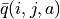 for each (i, j, a) based on the results of the trials and replace the original value.
But now, we have fewer k-test results in total (say 5 or 10). Although the k experiments are based on the latest current action scheme , the statistical effect is too small and the original q value is not so unreliable (after all, each iteration does not necessarily change too much). Thus, as opposed to calculating a new q-value directly from the experiment 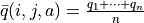 and overriding the original value (which we have always done in the previous direct algorithm 5).
(5)¶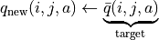
A smarter way to do this is to update the q value “gradually”. That is, we “tug” the old q-value slightly toward the results of the current experiment as the new q-value, thus making the new q-value more similar to the results of the current experiment , that is
(6)¶
The parameter  controls the “strength” of the traction (at a traction strength of 1, the (5) formula is degraded to directly override the q value using the test results, but we generally set a smaller number, such as 0.1 or 0.01). In this way, we have both added the information brought by the new experiment and retained some of the old knowledge. In fact, many iterative algorithms have similar characteristics.
controls the “strength” of the traction (at a traction strength of 1, the (5) formula is degraded to directly override the q value using the test results, but we generally set a smaller number, such as 0.1 or 0.01). In this way, we have both added the information brought by the new experiment and retained some of the old knowledge. In fact, many iterative algorithms have similar characteristics.
However, the value of is only available when a trial is fully done. That is, it is only by going to the bottom of the number triangle that the sum of the numbers from each coordinate on the path to the bottom of the path is known (thus updating the q-value of all coordinates on the path). This creates inefficiencies in some scenarios, so we tend to use another method when actually updating, making it possible to update the Q value every time we take a step. Specifically, suppose that in one experiment we jump to the coordinates (i’,j’) of a number triangle by performing the action ( stands for adding some exploratory perturbations) and then perform the action at the coordinates (i’,j’). We can then approximate the replacement of the previous with , as follows.
(7)¶
We can even dispense with the in the test results and use the larger of the q values corresponding to the two actions at the coordinates (i’, j’) instead of , as follows.
(8)¶
Exploration Strategy¶
For the experiment-based algorithms we described earlier, since the probability parameters in the environment are unknown (similar to thinking of the environment as a black box), we generally need to include some random “exploration strategies” during the experiment to ensure that the results of the experiment will cover a larger number of situations. Otherwise, since the intelligent body has a fixed action at each coordinate , the results of the experiment would be greatly limited, leading to a fall into a local optimum. Consider the most extreme case, if we go back to the original number triangle problem at the beginning of this section (environment determined, known and independent of probability), when the action is also fixed, the result is completely fixed and unique no matter how many trials are performed, leaving us no room for improvement or optimization.
There are many strategies to explore, and here we introduce a simpler one: set a probability ratio , generate random actions ( or ) with the probability of , and select actions with the probability of . We can see that when , it is equivalent to a completely random selection of actions. When , it is equivalent to selecting the action directly without adding any random perturbations. Generally, at the beginning of the iteration takes a larger value to expand the scope of exploration. As the number of iterations increases, the value of becomes progressively better and the value of decreases.
Solving problems on a large scale¶
There are two eternal metrics for algorithmic design: time and space. By transforming the direct algorithm into an iterative algorithm, we have tentatively solved the problem of time consumption of the algorithm. So our next challenge is space consumption, which is mainly reflected in the storage of Q values. In the previous description, we iteratively update the value of over and over again. This defaults to the fact that we have created a 3D array in memory that can be recorded and continuously updated with q values. However, what do we do if N is large and the computer has limited memory space?
Let’s consider that when we implement in concrete, we need it to be able to do two things.
q-value mapping: Given coordinates (i, j) and action a ( or ), a value of can be output.
Q-value update: Given coordinates (i, j), action a and target, the q-value mapping can be updated so that the updated output is closer to the target.
In fact, we have quite a few approximations that allow us to implement a that satisfies both of these functions without using much memory. One of the most popular approaches is presented here, which uses a deep neural network approximation to implement :
Q-value mapping: the coordinates (i, j) are entered into the depth neural network and the network outputs the q-values of all actions under the coordinates (i, j) (i.e. and ).
Q-value update: given coordinates (i, j), action a and target value target, input coordinates (i, j) into the depth neural network and the network outputs the q-value of all actions under coordinates (i, j), take the q-value of action a as and define the loss function and use an optimizer (e.g. gradient descent) to optimize this loss function in one step. The step length of the optimizer here is similar to that of the “traction parameter”
in the text above.

For the number triangle problem, the left figure shows an implementation using a three-dimensional array and the right figure shows an approximate implementation using a depth neural network ¶
sum up¶
Although we have not mentioned the term “reinforcement learning” in the previous article, we have already covered many of the basic concepts and algorithms of reinforcement learning in our discussion of the various variations of the number triangle problem, to list them here.
In the second section, we discuss Model-based Reinforcement Learning, which includes both Value Iteration and Policy Iteration approaches.
In Section 3, we discuss Model-free Reinforcement Learning (MFL).
In Section 4, we discussed the Monte-Carlo Method and the Temporal-Difference Method, as well as the two learning methods SARSA and Q-learning.
In Section 5, we discuss Deep Reinforcement Learning (DRL) using Q-Network (Q-Network) approximations to implement Q functions.
Some of these terms correspond to the following.
The coordinates (i, j) of a numeric triangle are called states (states) and are represented by
 . The set of states is represented by .
. The set of states is represented by .The two actions of the intelligent body, :math:downarrow’ and :math:searrow’, are called actions and are represented by :math:a’. The set of actions is represented by
 .
.The number triangle at each coordinate of is called Reward and is expressed as (related to state only) or (related to both state and action). The set of awards is represented by .
The probability parameters and in the numerical triangle environment are called State Transition Probabilities and are represented by a three-parameter function that represents the probability of performing action a in state s to reach state s’.
The quintiles of state, action, reward, state transfer probability, plus a time discount factor :math:gamma in [0, 1]` constitute a Markov Decision Process (MDP). In the number triangle problem .
The reinforcement learning known to MDP in the second section is called model-based reinforcement learning, and the reinforcement learning known to MDP with unknown probability of state transfer in the third section is called model-free reinforcement learning.
The action that the intelligent body selects at each coordinate (i, j) is called a policy and is represented by :math:pi(s)`. The optimal strategy of the intelligent body is represented by .
In the second section, when the strategy is certain, the intelligent body at the coordinates (i, j) “expects the sum of the numbers that will be obtained now and in the future” is called the State-Value Function and is denoted by . The intelligent body at coordinates (i, j) is “the desired maximum value of the sum of the numbers to be obtained in the future” called the state-value function under the optimal strategy and expressed as .
In Section 3, when the strategy is certain, the intelligent body selects action a at coordinates (i, j) with “the expectation of the sum of the numbers that will be obtained now and in the future” is called the Action-Value Function and is denoted by . The state-value function under the optimal strategy is represented by .
In sections III and IV, the method of estimating the mean value of directly using the test results is called the Monte Carlo method. The method in (7) that uses to approximate the replacement of is called the time difference method, and the method of updating the q value in (7) is itself called the SARSA method. (8) Call it the Q-learning method.
recommended reading
If readers wish to further their understanding of intensive learning, they can refer to
SJTU Multi-Agent Reinforcement Learning Tutorial (Concise introductory slides for reinforcement learning)
Intensive Learning Lectureship (Extensive Chinese language intensive learning column)
Guo Xian, Fang Y.C.. In-depth intensive learning: a primer on principles. Electronic Industry Press, 2018. (A more accessible introduction to intensive learning in Chinese)
Richard S. Sutton, Andrew G. Barto. Reinforcement Learning (2nd ed.). Electronic Industries Press, 2019. (A classic reinforcement learning textbook for more systems theory)
- 1
So it is sometimes called “memoryized search”, or memoryized search is a concrete implementation of dynamic programming.
- 2
expectation is the sum of the probabilities of each possible outcome in an experiment multiplied by its outcome, reflecting the magnitude of the average taken value of the random variable. For example, if you have probability of earning $100 in an investment and probability of earning $200, your expectation of earning the amount in this investment is . That is, if you repeat this investment many times, the average of the returns you get tends to be $175.
- 3
for reference, in the previous section,
- 4
The “exact” here and below is relative to the finite number of iterative algorithms. As long as the method is based on experimentation, the expectations obtained are estimates.
- 5
Here, however, if we add a randomly perturbed “exploration strategy” to the first iteration of the experiment, this calculation is not quite right. Because the results of the k trials were influenced by the exploration strategy, resulting in the fact that what we evaluated was actually the action after random perturbation , making the biased by our statistics based on the trial results. To solve this problem, we have two approaches. The first approach is to add a randomly perturbed “exploration strategy” to the process of selecting the maximum expectation for strategy improvement in the third step, while the second requires a method called “Importance Sampling”. Since most of the q-value update methods we actually use are the time-difference methods introduced later, the introduction of importance sampling is omitted here, and readers who need it can refer to the literature on intensive learning listed at the end of the paper.